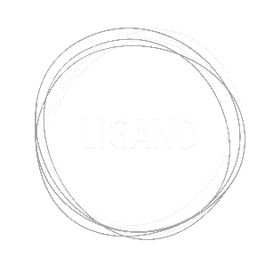

Beter laat dan nooit
Sorry zeggen kan soms moeilijk zijn, en dat is begrijpelijk.
Met de SorryBox krijg je tools die je daarbij kunnen helpen.
Zo kun je op een leuke en slimme manier je excuses aanbieden.

Sorry zeggen kan soms moeilijk zijn, en dat is begrijpelijk.
Met de SorryBox krijg je tools die je daarbij kunnen helpen.
Zo kun je op een leuke en slimme manier je excuses aanbieden.